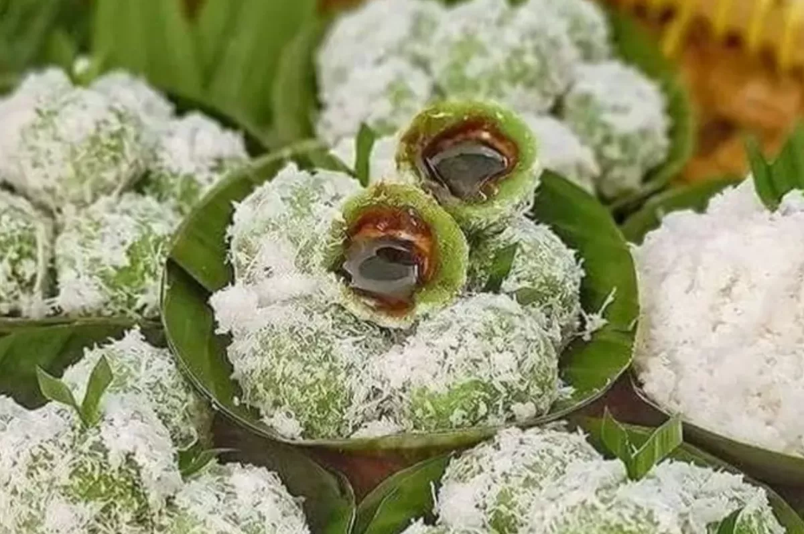

Resep Klepon
Klepon adalah salah satu jajanan tradisional Indonesia yang terbuat dari tepung ketan dan gula merah. Klepon berbentuk bulat kecil seperti bola, dengan ciri khas saat digigit gula merah di dalamnya akan "pecah" di mulut. Klepon biasanya dilapisi parutan kelapa yang memberikan rasa gurih khas.
Bahan-bahan:
- 200 gram tepung ketan
- 1/2 sdt pasta pandan atau air daun suji
- 100 gram gula merah, serut halus
- 100 gram kelapa parut
- 1/4 sdt garam
- Air secukupnya
Cara Membuat:
- Campur tepung ketan dengan air daun pandan, uleni hingga kalis dan bisa dibentuk.
- Ambil sedikit adonan, pipihkan, dan isi dengan gula merah serut. Bentuk bulat kecil.
- Rebus dalam air mendidih hingga klepon mengapung, angkat.
- Gulingkan klepon ke kelapa parut yang sudah dikukus dan dicampur garam.
- Sajikan hangat atau dingin sesuai selera.